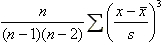
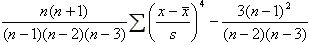

기술통계량(Descriptive
Statistics)
기술통계량(Descriptive Statistics)
1. 기술통계량이란?
주어진 데이터를 요약하여 그 특성(주로 위치 혹은 산포)을 설명해주는 값으로서
MINITAB에서는 다음과 같은 기술통계량을 계산해준다.
☞ 위치에 관련된 통계량
- 평균(Mean)
데이터를 모두 더한 후 총 데이터수로 나눈 값(단순 산술평균)으로서, 보편적으로 사용되는 데이터의 중심위치를 나타내는
대표값이다.
- 중앙값(Median)
데이터를 크기 순으로 나열했을 때 전체 데이터의 중간에 위치하는 값으로, 데이터의 분포가 어느 한 쪽으로 치우친
형태일 경우 평균보다 중심위치에 대한 더 좋은 대표값이 될 수도 있다. 오른 쪽 꼬리가 긴 분포이면 중앙값은 평균보다
왼쪽에 위치하게 된다.
- 절단평균(Trimmed Mean; TrMean)
전체로부터 값의 크기로 보아 상위 5% 및 하위 5% 이내에 해당하는 데이터를 제거한 후 나머지 데이터로 구한
평균값으로, 데이터 내에 이상치가 섞여 있을 경우 평균보다 중심위치에 대한 더 좋은 대표값이 될 수 있다.
- 최소치(Minimum)
데이터의 최소값
- 최대치(Maximum)
데이터의 최대값
- 1/4분위수(Q1)
데이터를 작은 값부터 크기 순으로 나열했을 때, (n+1)/4 번째에 해당하는 수.
- 3/4분위수(Q3)
데이터를 작은 값부터 크기 순으로 나열했을 때, 3(n+1)/4 번째에 해당하는 수.
☞ 산포에 관련된 통계량
- 분산(Variance)
대표적인 산포의 척도로서  와 같이 계산한다.
와 같이 계산한다.
- 표준편차(Standard Deviation; StDev)
분산과 함께 가장 널리 사용되는 산포의 척도로서 분산의 제곱근, 즉,  으로 계산한다.
으로 계산한다.
- 표준오차(Standard error of the mean; SE Mean)
표본평균의 표준편차에 대한 추정치로서  으로
계산되며 모평균의 신뢰구간을 구할 때 사용된다. 으로
계산되며 모평균의 신뢰구간을 구할 때 사용된다.
- 범위(Range)
주어진 데이터의 최대값과 최소값의 차이로서 표준편차보다 유효성은 떨어지지만 계산이 간편하다는 잇점이 있다.
- IQR(Interquartile Range)
3/4분위수와 1/4분위수의 차, 즉, Q3 - Q1로 계산되며 이상치가 있을 경우 범위보다 나은 산포의 척도가
될 수 있다.
- 제곱합(Sum of Squares)
 과
같이 계산되며 분산과 표준편차의 계산, 분산분석 등에 사용된다 과
같이 계산되며 분산과 표준편차의 계산, 분산분석 등에 사용된다
- MSSD(Mean of Successive Squared Difference)
이웃하는 데이터간 차이의 제곱을 평균하여 2로 나눈 값. 예로서 데이터가1, 3, 2, 1라면 MSSD는  을
2로 나눈 값으로 1이 된다. 을
2로 나눈 값으로 1이 된다.
☞ 기 타
- 왜도(Skewness)
비대칭 도라고도 하며 데이터의 분포가 중심위치로부터 어느 한 쪽으로 치우친 정도를 나타낸다.

으로 계산되며, 음의 값이면 왼쪽 꼬리가 긴 분포이고 양이면 오른쪽 꼬리가 긴 분포이다.
- 첨도(Kurtosis)
분포의 뾰족한 정도를 나타내는 척도로서 다음 식으로 계산된다.

양의 첨도는 정규 분포와 비교하여 상대적으로 더 뾰족하고 음의 첨도는 덜 뾰족하다.
2. MINITAB을 사용한 기술통계량의 계산
MINITAB에서는 기술통계량을 계산하고 시각적으로 보여주기 위한 도구로서 다음 세 가지를 구비하고 있다.
|